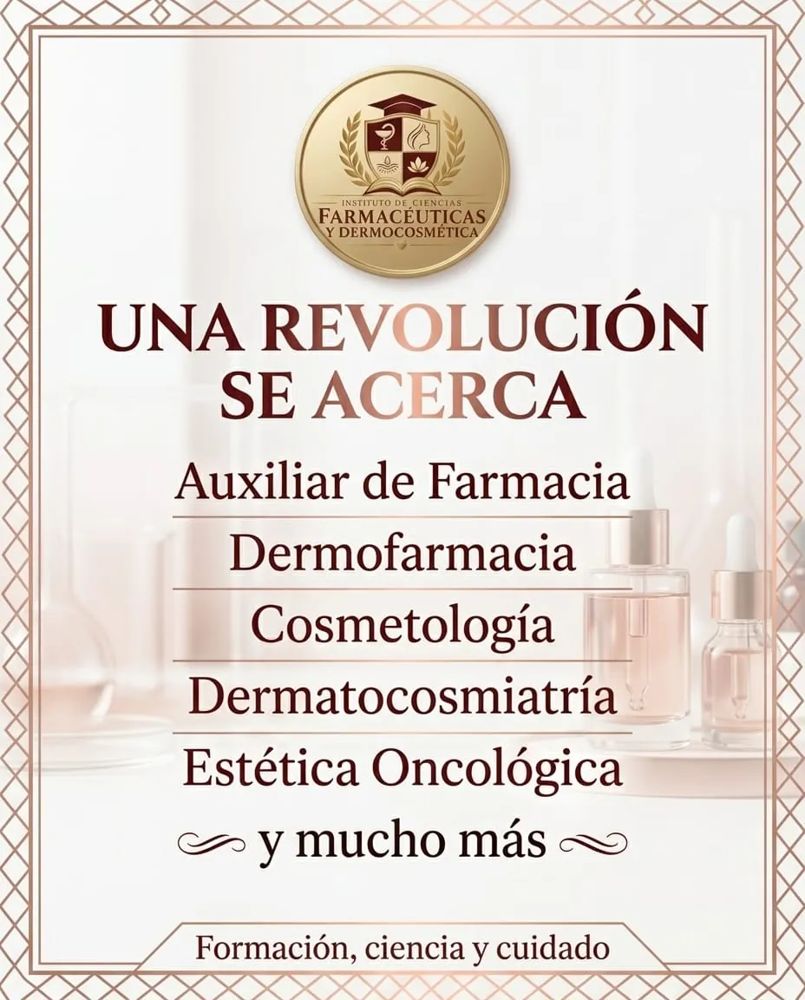

Formación, ciencia y cuidado
Formación online en farmacia y dermocosmética
Clases virtuales con certificación nacional en Auxiliar de Farmacia, Dermofarmacia, Cosmetología, Dermatocosmiatría y Estética Oncológica.
- Clases virtuales
- Certificación nacional
- 5 formaciones
Oferta académica
Cinco formaciones virtuales, de la base a la especialización.
5 formaciones
No encontramos formaciones con esa búsqueda. Probá con otra palabra o mirá la oferta completa.
Así se cursa en ICFD
-
01
Elegí tu formación
Mirá el programa de cada formación y sumala a tu inscripción. Si tenés dudas, te asesoramos por WhatsApp.
-
02
Cursá desde donde estés
Las clases son virtuales: las seguís desde la compu o el celular, con el material de estudio en un mismo lugar.
-
03
Certificá lo que aprendiste
Al completar la formación obtenés tu certificación nacional.
El instituto
La ciencia de la farmacia y el cuidado de la piel, en un mismo instituto
ICFD reúne dos campos que se cruzan todos los días: la farmacia y la dermocosmética. Cada formación combina base científica y práctica de cuidado, en clases virtuales con certificación nacional.
Recorridos sugeridos
Recorrido en farmacia
Auxiliar de FarmaciaDermofarmacia
Empezá por el trabajo diario en la farmacia y sumá el consejo dermocosmético.
Recorrido en dermocosmética
CosmetologíaDermatocosmiatríaEstética Oncológica
De los tratamientos de base a la atención de pieles con necesidades especiales.
El instituto te orienta según tu formación previa.
-
Formación
Programas por módulos, de la base a la especialización.
-
Ciencia
Fundamentos farmacéuticos y dermatológicos en cada clase.
-
Cuidado
El foco en la persona, del mostrador de la farmacia al gabinete.
Preguntas antes de inscribirte
¿Necesito formación previa?
Auxiliar de Farmacia y Cosmetología son formaciones de inicio. Dermofarmacia, Dermatocosmiatría y Estética Oncológica profundizan sobre una base previa: contanos tu caso y te orientamos.
¿Las formaciones tienen certificación?
Sí, las formaciones del instituto cuentan con certificación nacional. Por WhatsApp te contamos el detalle de cada una.
¿Desde dónde puedo cursar?
Desde donde estés: las clases son virtuales y solo necesitás una compu o un celular con conexión a internet.
¿Cómo me inscribo?
Sumá las formaciones que te interesan a tu inscripción y envianos la consulta por WhatsApp. Te respondemos con fechas, valores y requisitos.
Empezá tu formación en ICFD
Escribinos y te pasamos fechas, valores y requisitos de cada formación.
- +54 9 381 639-8814
- @institutocfd
- Sede en Tucumán · dirección a confirmar

En InstagramNovedades y oferta en @institutocfd